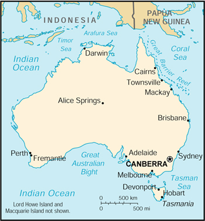

|
Australia | |
| Introduction Geography People Government Economy Communications Transportation Military Transnational Issues | ||
|  | ||
| Australia | Introduction | Top of Page |
| Background: | Australia became a commonwealth of the British Empire in 1901. It was able to take advantage of its natural resources to rapidly develop its agricultural and manufacturing industries and to make a major contribution to the British effort in World Wars I and II. Long-term concerns include pollution, particularly depletion of the ozone layer, and management and conservation of coastal areas, especially the Great Barrier Reef. A referendum to change Australia's status, from a commonwealth headed by the British monarch to an independent republic, was defeated in 1999. |
| Australia | Geography | Top of Page |
| Location: | Oceania, continent between the Indian Ocean and the South Pacific Ocean |
| Geographic coordinates: | 27 00 S, 133 00 E |
| Map references: | Oceania |
| Area: |
total:
7,686,850 sq km
land: 7,617,930 sq km water: 68,920 sq km note: includes Lord Howe Island and Macquarie Island |
| Area - comparative: | slightly smaller than the contiguous 48 states of the US |
| Land boundaries: | 0 km |
| Coastline: | 25,760 km |
| Maritime claims: |
contiguous zone:
24 NM
continental shelf: 200 NM or to the edge of the continental margin exclusive economic zone: 200 NM territorial sea: 12 NM |
| Climate: | generally arid to semiarid; temperate in south and east; tropical in north |
| Terrain: | mostly low plateau with deserts; fertile plain in southeast |
| Elevation extremes: |
lowest point:
Lake Eyre -15 m
highest point: Mount Kosciuszko 2,229 m |
| Natural resources: | bauxite, coal, iron ore, copper, tin, silver, uranium, nickel, tungsten, mineral sands, lead, zinc, diamonds, natural gas, petroleum |
| Land use: |
arable land:
6%
permanent crops: 0% permanent pastures: 54% forests and woodland: 19% other: 21% (1993 est.) |
| Irrigated land: | 21,070 sq km (1993 est.) |
| Natural hazards: | cyclones along the coast; severe droughts |
| Environment - current issues: | soil erosion from overgrazing, industrial development, urbanization, and poor farming practices; soil salinity rising due to the use of poor quality water; desertification; clearing for agricultural purposes threatens the natural habitat of many unique animal and plant species; the Great Barrier Reef off the northeast coast, the largest coral reef in the world, is threatened by increased shipping and its popularity as a tourist site; limited natural fresh water resources |
| Environment - international agreements: |
party to:
Antarctic-Environmental Protocol, Antarctic-Marine Living Resources, Antarctic Seals, Antarctic Treaty, Biodiversity, Climate Change, Desertification, Endangered Species, Environmental Modification, Hazardous Wastes, Law of the Sea, Marine Dumping, Marine Life Conservation, Nuclear Test Ban, Ozone Layer Protection, Ship Pollution, Tropical Timber 83, Tropical Timber 94, Wetlands, Whaling
signed, but not ratified: Climate Change-Kyoto Protocol |
| Geography - note: | world's smallest continent but sixth-largest country; population concentrated along the eastern and southeastern coasts; regular, tropical, invigorating, sea breeze known as "the Doctor" occurs along the west coast in the summer |
| Australia | People | Top of Page |
| Population: | 19,357,594 (July 2001 est.) |
| Age structure: |
0-14 years:
20.64% (male 2,045,892; female 1,948,949)
15-64 years: 66.86% (male 6,538,096; female 6,405,014) 65 years and over: 12.5% (male 1,059,107; female 1,360,536) (2001 est.) |
| Population growth rate: | 0.99% (2001 est.) |
| Birth rate: | 12.86 births/1,000 population (2001 est.) |
| Death rate: | 7.18 deaths/1,000 population (2001 est.) |
| Net migration rate: | 4.19 migrant(s)/1,000 population (2001 est.) |
| Sex ratio: |
at birth:
1.05 male(s)/female
under 15 years: 1.05 male(s)/female 15-64 years: 1.02 male(s)/female 65 years and over: 0.78 male(s)/female total population: 0.99 male(s)/female (2001 est.) |
| Infant mortality rate: | 4.97 deaths/1,000 live births (2001 est.) |
| Life expectancy at birth: |
total population:
79.87 years
male: 77.02 years female: 82.87 years (2001 est.) |
| Total fertility rate: | 1.77 children born/woman (2001 est.) |
| HIV/AIDS - adult prevalence rate: | 0.15% (1999 est.) |
| HIV/AIDS - people living with HIV/AIDS: | 14,000 (1999 est.) |
| HIV/AIDS - deaths: | 100 (1999 est.) |
| Nationality: |
noun:
Australian(s)
adjective: Australian |
| Ethnic groups: | Caucasian 92%, Asian 7%, aboriginal and other 1% |
| Religions: | Anglican 26.1%, Roman Catholic 26%, other Christian 24.3%, non-Christian 11% |
| Languages: | English, native languages |
| Literacy: |
definition:
age 15 and over can read and write
total population: 100% male: 100% female: 100% (1980 est.) |
| Australia | Government | Top of Page |
| Country name: |
conventional long form:
Commonwealth of Australia
conventional short form: Australia |
| Government type: | democratic, federal-state system recognizing the British monarch as sovereign |
| Capital: | Canberra |
| Administrative divisions: | 6 states and 2 territories*; Australian Capital Territory*, New South Wales, Northern Territory*, Queensland, South Australia, Tasmania, Victoria, Western Australia |
| Dependent areas: | Ashmore and Cartier Islands, Christmas Island, Cocos (Keeling) Islands, Coral Sea Islands, Heard Island and McDonald Islands, Norfolk Island |
| Independence: | 1 January 1901 (federation of UK colonies) |
| National holiday: | Australia Day, 26 January (1788) |
| Constitution: | 9 July 1900, effective 1 January 1901 |
| Legal system: | based on English common law; accepts compulsory ICJ jurisdiction, with reservations |
| Suffrage: | 18 years of age; universal and compulsory |
| Executive branch: |
chief of state:
Queen ELIZABETH II (since 6 February 1952), represented by Governor General Rev. Peter HOLLINGSWORTH (since 29 June 2001)
head of government: Prime Minister John Winston HOWARD (since 11 March 1996); Deputy Prime Minister John ANDERSON (since NA) cabinet: Cabinet selected from among the members of Federal Parliament by the governor general on the advice of the prime minister elections: none; the monarch is hereditary; governor general appointed by the monarch; following legislative elections, the leader of the majority party or leader of a majority coalition is usually appointed prime minister by the governor general for a three-year term note: government coalition - Liberal Party and National Party |
| Legislative branch: |
bicameral Federal Parliament consists of the Senate (76 seats - 12 from each of the six states and two from each of the two territories; one-half of the members elected every three years by popular vote to serve six-year terms) and the House of Representatives (148 seats; members elected by popular vote on the basis of proportional representation to serve three-year terms; no state can have fewer than five representatives)
elections: Senate - last held 3 October 1998 (next to be held by October 2001); House of Representatives - last held 3 October 1998 (next to be held by October 2001) election results: Senate - percent of vote by party - NA%; seats by party - Liberal Party-National Party coalition 35, Australian Labor Party 29, Australian Democratic Party 9, Green Party 1, One Nation Party 1, independent 1; House of Representatives - percent of vote by party - NA%; seats by party - Liberal Party-National Party coalition 80, Australian Labor Party 67, independent 1 |
| Judicial branch: | High Court (the chief justice and six other justices are appointed by the governor general) |
| Political parties and leaders: | Australian Democratic Party [Meg LEES]; Australian Labor Party [Kim BEAZLEY]; Green Party [Bob BROWN]; Liberal Party [John Winston HOWARD]; National Party [John ANDERSON]; One Nation Party [Pauline HANSON] |
| Political pressure groups and leaders: | Australian Democratic Labor Party (anti-Communist Labor Party splinter group); Peace and Nuclear Disarmament Action (Nuclear Disarmament Party splinter group) |
| International organization participation: | ANZUS, APEC, ARF (dialogue partner), AsDB, ASEAN (dialogue partner), Australia Group, BIS, C, CCC, CP, EBRD, ESCAP, FAO, IAEA, IBRD, ICAO, ICC, ICFTU, ICRM, IDA, IEA, IFAD, IFC, IFRCS, IHO, ILO, IMF, IMO, Inmarsat, Intelsat, Interpol, IOC, IOM, ISO, ITU, NAM (guest), NEA, NSG, OECD, OPCW, PCA, Sparteca, SPC, SPF, UN, UNCTAD, UNESCO, UNHCR, UNMEE, UNTAET, UNTSO, UNU, UPU, WFTU, WHO, WIPO, WMO, WTrO, ZC |
| Diplomatic representation in the US: |
chief of mission:
Ambassador Michael THAWLEY
chancery: 1601 Massachusetts Avenue NW, Washington, DC 20036 telephone: [1] (202) 797-3000 FAX: [1] (202) 797-3168 consulate(s) general: Atlanta, Honolulu, Los Angeles, New York, and San Francisco |
| Diplomatic representation from the US: |
chief of mission:
Ambassador Edward W. GNEHM, Jr.
embassy: Moonah Place, Yarralumla, Canberra, Australian Capital Territory 2600 mailing address: APO AP 96549 telephone: [61] (02) 6214-5600 FAX: [61] (02) 6214-5970 consulate(s) general: Sydney consulate(s): Melbourne and Perth |
| Flag description: | blue with the flag of the UK in the upper hoist-side quadrant and a large seven-pointed star in the lower hoist-side quadrant; the remaining half is a representation of the Southern Cross constellation in white with one small five-pointed star and four, larger, seven-pointed stars |
| Australia | Economy | Top of Page |
| Economy - overview: | Australia has a prosperous Western-style capitalist economy, with a per capita GDP at the level of the four dominant West European economies. Rich in natural resources, Australia is a major exporter of agricultural products, minerals, metals, and fossil fuels. Commodities account for 57% of the value of total exports, so that a downturn in world commodity prices can have a big impact on the economy. The government is pushing for increased exports of manufactured goods, but competition in international markets continues to be severe. While Australia has suffered from the low growth and high unemployment characterizing the OECD countries in the early 1990s and during the recent financial problems in East Asia, the economy has expanded at a solid 4% annual growth pace in the last five years. Canberra's emphasis on reforms is a key factor behind the economy's resilience to the regional crisis and its stronger than expected growth rate. Growth in 2001 will depend on key international commodity prices, the extent of recovery in nearby Asian economies, and the strength of US and European markets. |
| GDP: | purchasing power parity - $445.8 billion (2000 est.) |
| GDP - real growth rate: | 4.7% (2000 est.) |
| GDP - per capita: | purchasing power parity - $23,200 (2000 est.) |
| GDP - composition by sector: |
agriculture:
3%
industry: 26% services: 71% (1999 est.) |
| Population below poverty line: | NA% |
| Household income or consumption by percentage share: |
lowest 10%:
2%
highest 10%: 25.4% (1994) |
| Inflation rate (consumer prices): | 1.4% (2000 est.) |
| Labor force: | 9.5 million (December 1999) |
| Labor force - by occupation: | services 73%, industry 22%, agriculture 5% (1997 est.) |
| Unemployment rate: | 6.4% (2000) |
| Budget: |
revenues:
$94 billion
expenditures: $103 billion, including capital expenditures of $NA (1999 est.) |
| Industries: | mining, industrial and transportation equipment, food processing, chemicals, steel |
| Industrial production growth rate: | 1.5% (1999 est.) |
| Electricity - production: | 191.727 billion kWh (1999) |
| Electricity - production by source: |
fossil fuel:
89.93%
hydro: 8.36% nuclear: 0% other: 1.71% (1999) |
| Electricity - consumption: | 178.306 billion kWh (1999) |
| Electricity - exports: | 0 kWh (1999) |
| Electricity - imports: | 0 kWh (1999) |
| Agriculture - products: | wheat, barley, sugarcane, fruits; cattle, sheep, poultry |
| Exports: | $69 billion (f.o.b., 2000 est.) |
| Exports - commodities: | coal, gold, meat, wool, alumina, iron ore, wheat, machinery and transport equipment |
| Exports - partners: | Japan 19%, EU 14%, ASEAN 12%, US 9%, South Korea, NZ, Taiwan, Hong Kong, China (1999) |
| Imports: | $77 billion (f.o.b., 2000 est.) |
| Imports - commodities: | machinery and transport equipment, computers and office machines, telecommunication equipment and parts; crude oil and petroleum products |
| Imports - partners: | EU 24%, US 22%, Japan 14%, ASEAN 13% (1999) |
| Debt - external: | $220.6 billion (2000) |
| Economic aid - donor: | ODA, $1.43 billion (FY97/98) |
| Currency: | Australian dollar (AUD) |
| Currency code: | AUD |
| Exchange rates: | Australian dollars per US dollar - 1.7995 (January 2001), 1.7173 (2000), 1.5497 (1999), 1.5888 (1998), 1.3439 (1997), 1.2773 (1996) |
| Fiscal year: | 1 July - 30 June |
| Australia | Communications | Top of Page |
| Telephones - main lines in use: | 9.58 million (1998) |
| Telephones - mobile cellular: | 6.4 million (1998) |
| Telephone system: |
general assessment:
excellent domestic and international service
domestic: domestic satellite system; much use of radiotelephone in areas of low population density; rapid growth of mobile cellular telephones international: submarine cables to New Zealand, Papua New Guinea, and Indonesia; satellite earth stations - 10 Intelsat (4 Indian Ocean and 6 Pacific Ocean), 2 Inmarsat (Indian and Pacific Ocean regions) (1998) |
| Radio broadcast stations: | AM 262, FM 345, shortwave 1 (1998) |
| Radios: | 25.5 million (1997) |
| Television broadcast stations: | 104 (1997) |
| Televisions: | 10.15 million (1997) |
| Internet country code: | .au |
| Internet Service Providers (ISPs): | 264 (2000) |
| Internet users: | 7.77 million (2000) |
| Australia | Transportation | Top of Page |
| Railways: |
total:
33,819 km (2,540 km electrified)
broad gauge: 3,719 km 1.600-m gauge standard gauge: 15,422 km 1.435-m gauge narrow gauge: 14,506 km 1.067-m gauge dual gauge: 172 km NA gauges (1999) |
| Highways: |
total:
913,000 km
paved: 353,331 km (including 1,363 km of expressways) unpaved: 559,669 km (1996) |
| Waterways: | 8,368 km (mainly used by small, shallow-draft craft) |
| Pipelines: | crude oil 2,500 km; petroleum products 500 km; natural gas 5,600 km |
| Ports and harbors: | Adelaide, Brisbane, Cairns, Darwin, Devonport (Tasmania), Fremantle, Geelong, Hobart (Tasmania), Launceston (Tasmania), Mackay, Melbourne, Sydney, Townsville |
| Merchant marine: |
total:
54 ships (1,000 GRT or over) totaling 1,558,371 GRT/2,038,776 DWT
ships by type: bulk 26, cargo 3, chemical tanker 5, container 1, liquefied gas 4, passenger 2, petroleum tanker 7, roll on/roll off 6 (2000 est.) |
| Airports: | 411 (2000 est.) |
| Airports - with paved runways: |
total:
271
over 3,047 m: 10 2,438 to 3,047 m: 12 1,524 to 2,437 m: 118 914 to 1,523 m: 122 under 914 m: 9 (2000 est.) |
| Airports - with unpaved runways: |
total:
140
1,524 to 2,437 m: 17 914 to 1,523 m: 112 under 914 m: 11 (2000 est.) |
| Australia | Military | Top of Page |
| Military branches: | Australian Army, Royal Australian Navy, Royal Australian Air Force |
| Military manpower - military age: | 17 years of age |
| Military manpower - availability: | males age 15-49: 4,990,107 (2001 est.) |
| Military manpower - fit for military service: | males age 15-49: 4,303,966 (2001 est.) |
| Military manpower - reaching military age annually: | males: 138,971 (2001 est.) |
| Military expenditures - dollar figure: | $6.9 billion (FY98/99) |
| Military expenditures - percent of GDP: | 1.9% (FY98/99) |
| Australia | Transnational Issues | Top of Page |
| Disputes - international: | territorial claim in Antarctica (Australian Antarctic Territory) |
| Illicit drugs: | Tasmania is one of the world's major suppliers of licit opiate products; government maintains strict controls over areas of opium poppy cultivation and output of poppy straw concentrate |
{kind=link}